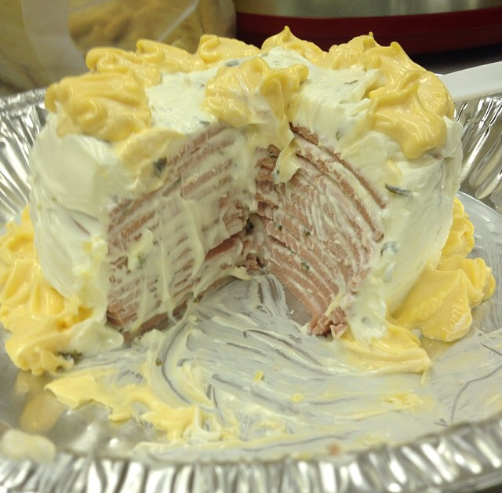

Bologna Cake

Description
Don't let the name fool you! This isn't a sweet 'cake' for dessert. Bologna Cake is a simple, savory Southern dish, popularly served as an appetizer or side dish at potlucks or family events. You may have heard of this unique meal in Sweet Home Alabama. Whether you're curious or amused, you've got to give this bologna cake recipe a try.
Ingredients
- Bologna: Use your preferred variety of bologna for this recipe. You can also substitute bologna for another cold-cut deli meat such as salami or ham. Most varieties of thicker sliced deli meat should work for this recipe.
- Cream Cheese: Make sure to soften your cream cheese before cooking.
- Onion Powder: Onion powder adds flavor to your cream cheese to make the finished product even tastier. You may also use garlic powder or Italian seasoning blend.